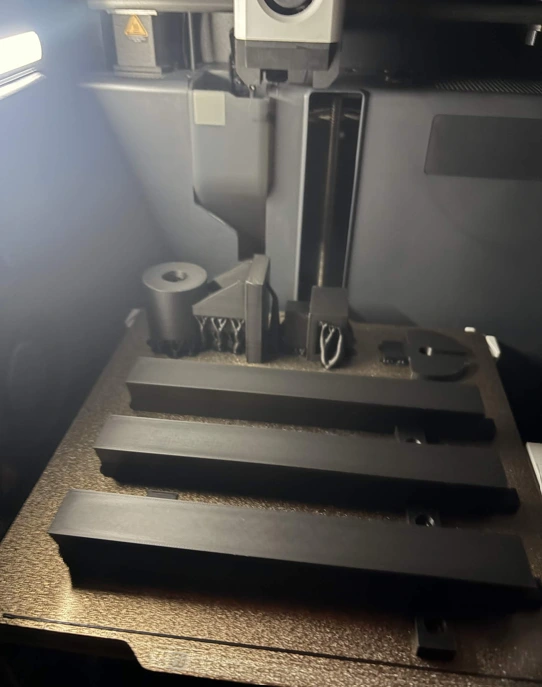

Undergraduate research · HBS Lab · Fall 2026
Modular TCP fabrication & characterization guide
While fabricating twisted and coiled polymer (TCP) muscles out of silver-coated nylon for our active cooling research, we were running into premature breaking and inconsistent coiling. During my literature review I came across a University of Calabria study that used a guide to restrict movement of the hanging weight. I was tasked with designing a custom guide that we could also reuse for future horizontal characterization.
Fabrication & design requirements


I compared rollers, a roller-and-track system and a sliding carriage. Since the deadweight was adjustable and the parts had to be 3D printed, I chose the simpler sliding guide. I wanted to minimize unpredictable drag and prevent rotation without making the setup harder to use.
- Fit the existing 2.125 m upright and accommodate roughly 2 m of precursor fiber.
- Keep the hanging load adjustable and allow the guide to be removed while maintaining tension.
- Prevent contact with the rail mounting tabs during travel.
- Reuse the same interlocking rail segments in both experimental setups.
Mechanical analysis
I used force and moment balances to estimate how much tension the guide would add, then checked bending and deflection caused by resisting rotation. This helped me size the components rather than just make the guide fit in CAD.
For an illustrative 5 N·mm torque and assumed friction coefficient of 0.30, the model gives 0.10 N of drag, equivalent to 10.2 g of additional deadweight before accounting for the guide's own mass. The actual torque and drag still need to be measured.
View hand calculations & free-body diagramsAdapting the guide for characterization
For future work building on the lab's active cooling research, I designed a second carriage that uses the same rail. A string connects the TCP inside a cooling tube to a removable rectangular post, and an 84 mm circular target provides a surface for the laser displacement sensor. The fixed tube, moving target and opposing preload form the proposed horizontal test setup.

I made the supported portion of the rectangular post longer than the exposed distance to the TCP connection so the socket could resist the overturning moment with lower contact reactions. I also kept the existing sliding surfaces and reduced the outer carriage geometry after the first printed guide showed it could catch on the screw tabs under side loading.
Prototype & structural verification

I used 15% infill on the supported rails and reinforced the load-bearing motor mount with 40% infill and six walls. Initial parts have been printed and checked for sliding fit. The revised geometry is ready for further loaded fit testing and SolidWorks simulation.
| Matched load case | Hand calculation | FEA | Difference |
|---|---|---|---|
| Rail lateral-load benchmark | 0.00188 mm | ___ mm | ___% |
| Horizontal post bending | 0.01755 mm | ___ mm | ___% |
Preliminary solid-section estimates using assumed equivalent stiffness. A matching FEA does not independently validate the printed infill or layer strength. Loaded friction, creep and cycle testing are still in progress.